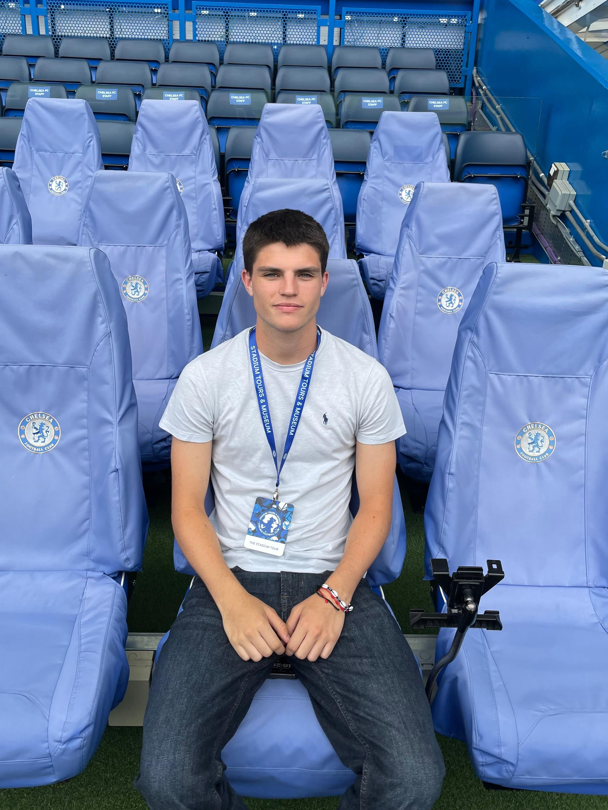

About Me
Hi, I'm Néstor Moreno and I'm 18 years old. I am currently studying a double degree in mathematical engineering and computer science at the Francisco de Vitoria University. I consider myself a hard-working person, who is not afraid to face unexpected problems or situations. In addition, I believe I have a high capacity to solve problems and to think outside the box. On the other hand, I love sports and keeping fit, as I am a true believer of Mens sana in corpore sano.
CV
If you click on CV you can access my curriculum vitae and have a look at it. If you have any questions, please do not hesitate to contact me.